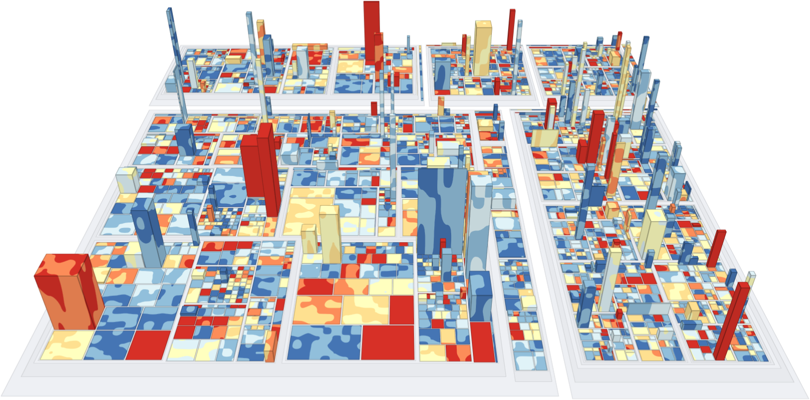

Selected Publications
- Journal Article
Evaluating Text Embeddings for Two-Dimensional Text Corpora Representations
Daniel Atzberger , Tim Barz-Cech , Willy Scheibel , Jürgen Döllner , and Tobias Schreck
SAGE Information Visualization (IVI)Several text corpus visualizations utilize a map-like metaphor, where the layout reflects the semantic similarity between documents. The underlying two-dimensional scatterplots are created by combining a latent embedding with a subsequent dimensionality reduction. In this work, we analyze the impact of embedding quality on layout quality. We evaluate the accuracy of the layout, specifically the preservation of local and global structures of the text corpus in its two-dimensional representation. Additionally, we assess class separation, focusing on the effectiveness of distinguishing classes within the two-dimensional space. We introduce a benchmark B = (D, L, QE , QDR) consisting of a collection of text corpora D, a set of layout algorithms L that combine text embeddings with dimensionality reductions, quality metrics QE for evaluating text embeddings, and quality metrics QDR for assessing accuracy and class separation. We generate a multivariate dataset by evaluating this benchmark, which we further analyze in a descriptive analysis. Our results indicate that, for Latent Semantic Indexing combined with tf-idf weighting and t-distributed Stochastic Neighbor Embedding, coherence plays a substantial role in determining the accuracy of the layout. Additionally, our findings reveal that embeddings do not enhance class separation in the two-dimensional scatterplot representation. As main result, we provide more fine-grained guidelines for effectively utilizing text embeddings and dimensionality reduction techniques to generate two-dimensional scatterplot representations of text corpora reflecting semantic similarity.
@article{atzberger2025-topic-model-influence-extended, title = {Evaluating Text Embeddings for Two-Dimensional Text Corpora Representations}, author = {Atzberger, Daniel and Barz-Cech, Tim and Scheibel, Willy and Döllner, Jürgen and Schreck, Tobias}, year = {2025}, journal = {Information Visualization}, publisher = {SAGE}, note = {in press}, doi = {10.1177/14738716251355650}, }- Publisher Record
- Author Version
 Journal Article
Journal ArticleA Large-Scale Sensitivity Analysis on Latent Embeddings and Dimensionality Reductions for Text Spatializations
Daniel Atzberger , Tim Cech , Willy Scheibel , Jürgen Döllner , Michael Behrisch , and Tobias Schreck
29th IEEE Conference on Visualization and Visual Analytics (VIS '24), IEEE Transactions on Visualization and Computer Graphics (TVCG)The semantic similarity between documents of a text corpus can be visualized using map-like metaphors based on two-dimensional scatterplot layouts. These layouts result from a dimensionality reduction on the document-term matrix or a representation within a latent embedding, including topic models. Thereby, the resulting layout depends on the input data and hyperparameters of the dimensionality reduction and is therefore affected by changes in them. Furthermore, the resulting layout is affected by changes in the input data and hyperparameters of the dimensionality reduction. However, such changes to the layout require additional cognitive efforts from the user. In this work, we present a sensitivity study that analyzes the stability of these layouts concerning (1) changes in the text corpora, (2) changes in the hyperparameter, and (3) randomness in the initialization. Our approach has two stages: data measurement and data analysis. First, we derived layouts for the combination of three text corpora and six text embeddings and a grid-search-inspired hyperparameter selection of the dimensionality reductions. Afterward, we quantified the similarity of the layouts through ten metrics, concerning local and global structures and class separation. Second, we analyzed the resulting 42817 tabular data points in a descriptive statistical analysis. From this, we derived guidelines for informed decisions on the layout algorithm and highlight specific hyperparameter settings. We provide our implementation as a Git repository at https://github.com/hpicgs/Topic-Models-and-Dimensionality-Reduction-Sensitivity-Study and results as Zenodo archive at https://doi.org/10.5281/zenodo.12772898.
@article{acstrds2025-evaluation-tm-dr, author = {Atzberger, Daniel and Cech, Tim and Scheibel, Willy and Döllner, Jürgen and Behrisch, Michael and Schreck, Tobias}, title = {A Large-Scale Sensitivity Analysis on Latent Embeddings and Dimensionality Reductions for Text Spatializations}, journal = {Transactions on Visualization and Computer Graphics}, year = {2025}, publisher = {IEEE}, doi = {10.1109/TVCG.2024.3456308}, pages = {305--315}, volume = {31}, number = {1}, }- Journal Article
A Survey on Non-photorealistic Rendering Approaches for Point Cloud Visualization
Ole Wegen , Willy Scheibel , Matthias Trapp , Rico Richter , and Jürgen Döllner
IEEE Transactions on Visualization and Computer Graphics (TVCG), 29th IEEE Conference on Visualization and Visual Analytics (VIS '24)Point clouds are widely used as a versatile representation of 3D entities and scenes for all scale domains and in a variety of application areas, serving as a fundamental data category to directly convey spatial features. However, due to point sparsity, lack of structure, irregular distribution, and acquisition-related inaccuracies, results of point cloud visualization are often subject to visual complexity and ambiguity. In this regard, non-photorealistic rendering can improve visual communication by reducing the cognitive effort required to understand an image or scene and by directing attention to important features. In the last 20 years, this has been demonstrated by various non-photorealistic rendering approaches that were proposed to target point clouds specifically. However, they do not use a common language or structure for assessment which complicates comparison and selection. Further, recent developments regarding point cloud characteristics and processing, such as massive data size or web-based rendering are rarely considered. To address these issues, we present a survey on non-photorealistic rendering approaches for point cloud visualization, providing an overview of the current state of research. We derive a structure for the assessment of approaches, proposing seven primary dimensions for the categorization regarding intended goals, data requirements, used techniques, and mode of operation. We then systematically assess corresponding approaches and utilize this classification to identify trends and research gaps, motivating future research in the development of effective non-photorealistic point cloud rendering methods.
@article{wstrd2024-point-cloud-npr, author = {Wegen, Ole and Scheibel, Willy and Trapp, Matthias and Richter, Rico and Döllner, Jürgen}, title = {A Survey on Non-photorealistic Rendering Approaches for Point Cloud Visualization}, journal = {Transactions on Visualization and Computer Graphics}, year = {2024}, publisher = {IEEE}, doi = {10.1109/TVCG.2024.3402610}, note = {in press}, }  Journal Article
Journal ArticleIntegrated Visual Software Analytics on the GitHub Platform
Willy Scheibel , Jasper Blum, Franziska Lauterbach, Daniel Atzberger , and Jürgen Döllner
Issue Cover
MDPI ComputersReadily available software analysis and analytics tools are often operated within external services, where the measured software analysis data is kept internally and no external access to the data is available. We propose an approach to integrate visual software analysis on the GitHub platform by leveraging GitHub Actions and the GitHub API, covering both analysis and visualization. The process is to perform software analysis for each commit, e.g., static source code complexity metrics, and augment the commit by the resulting data, stored as git objects within the same repository. We show that this approach is feasible by integrating it into 64 open source TypeScript projects. Further, we analyze the impact on Continuous Integration (CI) run time and repository storage. The stored software analysis data is externally accessible to allow for visualization tools, such as software maps. The effort to integrate our approach is limited to enabling the analysis component within the a project's CI on GitHub and embed an HTML snippet into the project's website for visualization. This enables a large amount of projects to have access to software analysis as well as provide means to communicate the current status of a project.
@article{sblad2024-githubembedded, author = {Scheibel, Willy and Blum, Jasper and Lauterbach, Franziska and Atzberger, Daniel and Döllner, Jürgen}, title = {Integrated Visual Software Analytics on the GitHub Platform}, year = {2024}, journal = {Computers}, volume = {13}, number = {2}, pages = {33:1--23}, doi = {10.3390/computers13020033}, publisher = {MDPI}, }- Full Paper
Quantifying Topic Model Influence on Text Layouts based on Dimensionality Reductions
Daniel Atzberger , Tim Cech , Willy Scheibel , Jürgen Döllner , and Tobias Schreck
Best Paper Award
SciTePress 15th International Conference on Information Visualization Theory and Applications (IVAPP '24)Text spatializations for text corpora often rely on two-dimensional scatter plots generated from topic models and dimensionality reductions. Topic models are unsupervised learning algorithms that identify clusters, so-called topics, within a corpus, representing the underlying concepts. Furthermore, topic models transform documents into vectors, capturing their association with topics. A subsequent dimensionality reduction creates a two-dimensional scatter plot, illustrating semantic similarity between the documents. A recent study by Atzberger et al. has shown that topic models are beneficial for generating two-dimensional layouts. However, in their study, the hyperparameters of the topic models are fixed, and thus the study does not analyze the impact of the topic models' quality on the resulting layout. Following the methodology of Atzberger et al., we present a comprehensive benchmark comprising (1) text corpora, (2) layout algorithms based on topic models and dimensionality reductions, (3) quality metrics for assessing topic models, and (4) metrics for evaluating two-dimensional layouts' accuracy and cluster separation. Our study involves an exhaustive evaluation of numerous parameter configurations, yielding a dataset that quantifies the quality of each dataset-layout algorithm combination. Through a rigorous analysis of this dataset, we derive practical guidelines for effectively employing topic models in text spatializations. As a main result, we conclude that the quality of a topic model measured by coherence is positively correlated to the layout quality in the case of Latent Semantic Indexing and Non-Negative Matrix Factorization.
@inproceedings{acsds2024-topic-model-influence, author = {Atzberger, Daniel and Cech, Tim and Scheibel, Willy and Döllner, Jürgen and Schreck, Tobias}, title = {Quantifying Topic Model Influence on Text Layouts based on Dimensionality Reductions}, booktitle = {Proceedings of the 19th International Joint Conference on Computer Vision, Imaging and Computer Graphics Theory and Applications -- Volume 1: GRAPP, HUCAPP and IVAPP}, year = {2024}, series = {IVAPP '24}, publisher = {SciTePress}, organization = {INSTICC}, isbn = {978-989-758-679-8}, issn = {2184-4321}, pages = {593--602}, doi = {10.5220/0012391100003660}, } - Journal Article
Large-Scale Evaluation of Topic Models and Dimensionality Reduction Methods for 2D Text Spatialization
Daniel Atzberger , Tim Cech , Matthias Trapp , Rico Richter , Willy Scheibel , Jürgen Döllner , and Tobias Schreck
28th IEEE Conference on Visualization and Visual Analytics (VIS '23), IEEE Transactions on Visualization and Computer Graphics (TVCG)Topic models are a class of unsupervised learning algorithms for detecting the semantic structure within a text corpus. Together with a subsequent dimensionality reduction algorithm, topic models can be used for deriving spatializations for text corpora as two-dimensional scatter plots, reflecting semantic similarity between the documents and supporting corpus analysis. Although the choice of the topic model, the dimensionality reduction, and their underlying hyperparameters significantly impact the resulting layout, it is unknown which particular combinations result in high-quality layouts with respect to accuracy and perception metrics. To investigate the effectiveness of topic models and dimensionality reduction methods for the spatialization of corpora as two-dimensional scatter plots (or basis for landscape-type visualizations), we present a large-scale, benchmark-based computational evaluation. Our evaluation consists of (1) a set of corpora, (2) a set of layout algorithms that are combinations of topic models and dimensionality reductions, and (3) quality metrics for quantifying the resulting layout. The corpora are given as document-term matrices, and each document is assigned to a thematic class. The chosen metrics quantify the preservation of local and global properties and the perceptual effectiveness of the two-dimensional scatter plots. By evaluating the benchmark on a computing cluster, we derived a multivariate dataset with over 45000 individual layouts and corresponding quality metrics. Based on the results, we propose guidelines for the effective design of text spatializations that are based on topic models and dimensionality reductions. As a main result, we show that interpretable topic models are beneficial for capturing the structure of text corpora. We furthermore recommend the use of t-SNE as a subsequent dimensionality reduction.
@article{acstrds2023-evaluation-tm-dr, author = {Atzberger, Daniel and Cech, Tim and Trapp, Matthias and Richter, Rico and Scheibel, Willy and Döllner, Jürgen and Schreck, Tobias}, title = {Large-Scale Evaluation of Topic Models and Dimensionality Reduction Methods for 2D Text Spatialization}, journal = {Transactions on Visualization and Computer Graphics}, year = {2024}, publisher = {IEEE}, doi = {10.1109/TVCG.2023.3326569}, volume = {30}, number = {1}, pages = {902--912}, }  Chapter
ChapterVisualization of Source Code Similarity using 2.5D Semantic Software Maps
Daniel Atzberger , Tim Cech , Willy Scheibel , Daniel Limberger , and Jürgen Döllner
Springer VISIGRAPP 2021: Computer Vision, Imaging and Computer Graphics Theory and Applications (VISIGRAPP 2021)For various program comprehension tasks, software visualization techniques can be beneficial by displaying aspects related to the behavior, structure, or evolution of software. In many cases, the question is related to the semantics of the source code files, e.g., the localization of files that implement specific features or the detection of files with similar semantics. This work presents a general software visualization technique for source code documents, which uses 3D glyphs placed on a two-dimensional reference plane. The relative positions of the glyphs captures their semantic relatedness. Our layout originates from applying Latent Dirichlet Allocation and Multidimensional Scaling on the comments and identifier names found in the source code files. Though different variants for 3D glyphs can be applied, we focus on cylinders, trees, and avatars. We discuss various mappings of data associated with source code documents to the visual variables of 3D glyphs for selected use cases and provide details on our visualization system.
@incollection{atzberger2023-semantic-software-maps, author = {Atzberger, Daniel and Cech, Tim and Scheibel, Willy and Limberger, Daniel and Döllner, Jürgen}, title = {Visualization of Source Code Similarity using 2.5D Semantic Software Maps}, booktitle = {VISIGRAPP 2021: Computer Vision, Imaging and Computer Graphics Theory and Applications}, publisher = {Springer}, year = {2023}, doi = {10.1007/978-3-031-25477-2_8}, isbn = {978-3-031-25477-2}, series = {Communications in Computer and Information Science}, volume = {1691}, pages = {162--182}, }- Full Paper
Hardware-accelerated Rendering of Web-based 3D Scatter Plots with Projected Density Fields and Embedded Controls
Lukas Wagner , Daniel Limberger , Willy Scheibel , and Jürgen Döllner
Best Paper Award
ACM 27th International Conference on 3D Web Technology (Web3D '22)3D scatter plots depicting massive data suffer from occlusion, which makes it difficult to get an overview and perceive structure. This paper presents a technique that facilitates the comprehension of heavily occluded 3D scatter plots. Data points are projected to axial planes, creating x-ray-like 2D views that support the user in analyzing the data's density and layout. We showcase our open-source web application with a hardware-accelerated rendering component written in WebGL. It allows for interactive interaction, filtering, and navigation with datasets up to hundreds of thousands of nodes. The implementation is detailed and discussed with respect to challenges posed by API and performance limitations.
@inproceedings{wagner2022-scatterplot, author = {Wagner, Lukas and Limberger, Daniel and Scheibel, Willy and Döllner, Jürgen}, title = {Hardware-accelerated Rendering of Web-based 3D Scatter Plots with Projected Density Fields and Embedded Controls}, year = {2022}, series = {Web3D '22}, publisher = {ACM}, booktitle = {Proceedings of the 27th International Conference on 3D Web Technology}, doi = {10.1145/3564533.3564566}, pages = {1:1--5}, isbn = {9781450399142}, } - Journal Article
Procedural Texture Patterns for Encoding Changes in Color in 2.5D Treemap Visualizations
Daniel Limberger , Willy Scheibel , Jan van Diecken, and Jürgen Döllner
Springer Journal of Visualization (JoVi)Treemaps depict tree-structured data while maintaining flexibility in mapping data to different visual variables. This work explores how changes in data mapped to color can be represented with rectangular 2.5D treemaps using procedural texture patterns. The patterns are designed to function for both static images and interactive visualizations with animated transitions. During rendering, the procedural texture patterns are superimposed onto the existing color mapping. We present a pattern catalog with seven exemplary patterns having different characteristics in representing the mapped data. This pattern catalog is implemented in a WebGL-based treemap rendering prototype and is evaluated using performance measurements and case studies on two software projects. As a result, this work extends the toolset of visual encodings for 2.5D treemaps by procedural texture patterns to represent changes in color. It serves as a starting point for user-centered evaluation.
@article{limberger2022-procedural-texture-patterns, author = {Limberger, Daniel and Scheibel, Willy and van Diecken, Jan and Döllner, Jürgen}, title = {Procedural Texture Patterns for Encoding Changes in Color in 2.5D Treemap Visualizations}, journal = {Journal of Visualization}, year = {2022}, doi = {10.1007/s12650-022-00874-3}, volume = {26}, pages = {317--333}, publisher = { Springer }, } - Journal Article
Visual Variables and Configuration of Software Maps
Daniel Limberger , Willy Scheibel , Jürgen Döllner , and Matthias Trapp
Springer Journal of Visualization (JoVi)Software maps provide a general-purpose interactive user interface and information display in software analytics. This paper classifies software maps as a containment-based treemap embedded into a 3D attribute space and introduces respective terminology. It provides a comprehensive overview of advanced visual metaphors and techniques, each suitable for interactive visual analytics tasks. The metaphors and techniques are briefly described, located within a visualization pipeline model, and considered within a software map design space. The general expressiveness and applicability of visual variables are detailed and discussed. Consequent applications and use cases w.r.t. different types of software system data and software engineering data are discussed, arguing for versatile use of software maps in visual software analytics.
@article{limberger2022-configuration-softwaremaps, author = {Limberger, Daniel and Scheibel, Willy and Döllner, Jürgen and Trapp, Matthias}, title = {Visual Variables and Configuration of Software Maps}, journal = {Journal of Visualization}, year = {2022}, doi = {10.1007/s12650-022-00868-1}, volume = {26}, pages = {249--274}, publisher = { Springer }, }  Short Paper
Short PaperTooling for Time- and Space-efficient git Repository Mining
Fabian Heseding, Willy Scheibel , and Jürgen Döllner
ACM 19th International Conference on Mining Software Repositories – Data and Tool Showcase Track (MSR '22)Software projects under version control grow with each commit, accumulating up to hundreds of thousands of commits per repository. Especially for such large projects, the traversal of a repository and data extraction for static source code analysis poses a trade-off between granularity and speed. We showcase the command-line tool pyrepositoryminer that combines a set of optimization approaches for efficient traversal and data extraction from git repositories while being adaptable to third-party and custom software metrics and data extractions. The tool is written in Python and combines bare repository access, in-memory storage, parallelization, caching, change-based analysis, and optimized communication between the traversal and custom data extraction components. The tool allows for both metrics written in Python and external programs for data extraction. A single-thread performance evaluation based on a basic mining use case shows a mean speedup of 15.6x to other freely available tools across four mid-sized open source projects. A multi-threaded execution allows for load distribution among cores and, thus, a mean speedup up to 86.9x using 12 threads.
@inproceedings{hsd2022-gitmining, author = {Heseding, Fabian and Scheibel, Willy and Limberger, Daniel and Döllner, Jürgen}, title = {Tooling for Time- and Space-efficient git Repository Mining}, booktitle = {Proceedings of the 19th International Conference on Mining Software Repositories -- Data and Tool Showcase Track}, year = {2022}, series = {MSR '22}, publisher = {ACM}, doi = {10.1145/3524842.3528503}, pages = {413--417}, isbn = {978-1-4503-9303-4}, } Full Paper
Full PaperMining Developer Expertise from Bug Tracking Systems using the Author-Topic Model
Daniel Atzberger , Jonathan Schneider, Willy Scheibel , Daniel Limberger , Matthias Trapp , and Jürgen Döllner
Best Student Paper Award
SciTePress 17th International Conference on Evaluation of Novel Approaches to Software Engineering (ENASE '22)During software development processes, software defects, so-called bugs, are captured in a semi-structured manner in bug tracking systems using textual components and categorical features. It is the task of the triage owner to assign open bugs to developers with the required skills and expertise. This task, known as bug triaging, requires an in-depth knowledge about a developer's skills. Various machine learning techniques have been proposed to automate this task, most of these approaches apply topic models, especially Latent Dirichlet Allocation (LDA), for mining the textual components of bug reports. However none of the proposed approaches explicitly models a developers expertise. In most cases these algorithms are treated as black box, as they allow no explanation about their recommendation. In this work, we show how the Author-Topic Model (ATM), a variant of LDA, can be used to capture a developer's expertise in the latent topics of a corpus of bug reports from the model itself. Furthermore, we present three novel bug triaging techniques based on the ATM. We compare our approach against a baesline model, that is based on LDA, on a dataset of 18269 bug reports from the Mozilla Firefox project collected between July 1999 to June 2016. The results show that the ATM can outperform the LDA-based approach in terms of the Mean Reciprocal Rank (MRR).
@inproceedings{assltd2022-developerexpertise, author = {Atzberger, Daniel and Schneider, Jonathan and Scheibel, Willy and Limberger, Daniel and Trapp, Matthias and Döllner, Jürgen}, title = {Mining Developer Expertise from Bug Tracking Systems using the Author-Topic Model}, booktitle = {Proceedings of the 17th International Conference on Evaluation of Novel Approaches to Software Engineering}, year = {2022}, series = {ENASE '22}, publisher = {SciTePress}, organization = {INSTICC}, doi = {10.5220/0011045100003176}, pages = {107--118}, isbn = {978-989-758-568-5}, } Short Paper
Short PaperAlgorithmic Improvements on Hilbert and Moore Treemaps for Visualization of Large Tree-structured Datasets
Willy Scheibel , Christopher Weyand , Joseph Bethge , and Jürgen Döllner
EG 23rd EG Conference on Visualization (EuroVis '21)Hilbert and Moore treemaps are based on the same named space-filling curves to lay out tree-structured data for visualization. One main component of them is a partitioning subroutine, whose algorithmic complexity poses problems when scaling to industry-sized datasets. Further, the subroutine allows for different optimization criteria that result in different layout decisions. This paper proposes conceptual and algorithmic improvements to this partitioning subroutine. Two measures for the quality of partitioning are proposed, resulting in the min-max and min-variance optimization tasks. For both tasks, linear-time algorithms are presented that find an optimal solution. The implementation variants are evaluated with respect to layout metrics and run-time performance against a previously available greedy approach. The results show significantly improved run time and no deterioration in layout metrics, suggesting effective use of Hilbert and Moore treemaps for datasets with millions of nodes.
@inproceedings{scheibel2021-hilbertmooreperformance, author = {Scheibel, Willy and Weyand, Christopher and Bethge, Joseph and Döllner, Jürgen}, title = {Algorithmic Improvements on Hilbert and Moore Treemaps for Visualization of Large Tree-structured Datasets}, booktitle = {Proceedings of the 23rd EG Conference on Visualization}, series = {EuroVis '21}, publisher = {EG}, year = {2021}, isbn = {978-3-03868-143-4}, doi = {10.2312/evs.20211065}, pages = {115--119}, } Full Paper
Full PaperSurvey of Treemap Layout Algorithms
Willy Scheibel , Daniel Limberger , and Jürgen Döllner
ACM 13th International Symposium on Visual Information Communication and Interaction (VINCI '20)This paper provides an overview of published treemap layout algorithms from 1991 to 2019 that were used for information visualization and computational geometry. First, a terminology is outlined for the precise communication of tree-structured data and layouting processes. Second, an overview and classification of layout algorithms is presented and application areas are discussed. Third, the use-case-specific adaption process is outlined and discussed. This overview targets practitioners and researchers by providing a starting point for own research, visualization design, and applications.
@inproceedings{scheibel2020-treemap-layout-algorithms, author = {Scheibel, Willy and Limberger, Daniel and Döllner, Jürgen}, title = {Survey of Treemap Layout Algorithms}, booktitle = {Proceedings of the 13th International Symposium on Visual Information Communication and Interaction}, year = {2020}, series = {VINCI '20}, publisher = {ACM}, pages = {1:1--9}, doi = {10.1145/3430036.3430041}, isbn = {978-1-4503-8750-7}, } Full Paper
Full PaperSurvey on User Studies on the Effectiveness of Treemaps
Carolin Fiedler, Willy Scheibel , Daniel Limberger , Matthias Trapp , and Jürgen Döllner
ACM 13th International Symposium on Visual Information Communication and Interaction (VINCI '20)Treemaps are a commonly used tool for the visual display and communication of tree-structured, multi-variate data. In order to confidently know when and how treemaps can best be applied, the research community uses usability studies and controlled experiments to "understand the potential and limitations of our tools" (Plaisant, 2004). To support the communities' understanding and usage of treemaps, this survey provides a comprehensive review and detailed overview of 69 user studies related to treemaps. However, due to pitfalls and shortcomings in design, conduct, and reporting of the user studies, there is little that can be reliably derived or accepted as a generalized statement. Fundamental open questions include configuration, compatible tasks, use cases, and perceptional characteristics of treemaps. The reliability of findings and statements is discussed and common pitfalls of treemap user studies are identified.
@inproceedings{fiedler2020-treemap-evaluation, author = {Fiedler, Carolin and Scheibel, Willy and Limberger, Daniel and Trapp, Matthias and Döllner, Jürgen}, title = {Survey on User Studies on the Effectiveness of Treemaps}, booktitle = {Proceedings of the 13th International Symposium on Visual Information Communication and Interaction}, year = {2020}, series = {VINCI '20}, publisher = {ACM}, pages = {2:1--10}, doi = {10.1145/3430036.3430054}, isbn = {978-1-4503-8750-7}, } Position Paper
Position PaperA Taxonomy of Treemap Visualization Techniques
Willy Scheibel , Matthias Trapp , Daniel Limberger , and Jürgen Döllner
SciTePress 11th International Conference on Information Visualization Theory and Applications (IVAPP '20)A treemap is a visualization that has been specifically designed to facilitate the exploration of tree-structured data and, more general, hierarchically structured data. The family of visualization techniques that use a visual metaphor for parent-child relationships based “on the property of containment” (Johnson, 1993) is commonly referred to as treemaps. However, as the number of variations of treemaps grows, it becomes increasingly important to distinguish clearly between techniques and their specific characteristics. This paper proposes to discern between Space-filling Treemap, Containment Treemap, Implicit Edge Representation Tree, and Mapped Tree for classification of hierarchy visualization techniques and highlights their respective properties. This taxonomy is created as a hyponymy, i.e., its classes have an is-a relationship to one another. With this proposal, we intend to stimulate a discussion on a more unambiguous classification of treemaps and, furthermore, broaden what is understood by the concept of treemap itself.
@inproceedings{scheibel2020-treemaptaxonomy, author = {Scheibel, Willy and Trapp, Matthias and Limberger, Daniel and Döllner, Jürgen}, title = {A Taxonomy of Treemap Visualization Techniques}, booktitle = {Proceedings of the 15th International Joint Conference on Computer Vision, Imaging and Computer Graphics Theory and Applications -- Volume 3: IVAPP}, year = {2020}, series = {IVAPP '20}, pages = {273--280}, publisher = {SciTePress}, organization = {INSTICC}, doi = {10.5220/0009153902730280}, isbn = {978-989-758-402-2}, issn = {2184-4321}, }- Short Paper
EvoCells – A Treemap Layout Algorithm for Evolving Tree Data
Willy Scheibel , Christopher Weyand , and Jürgen Döllner
SciTePress 9th International Conference on Information Visualization Theory and Applications (IVAPP '18)We propose the rectangular treemap layout algorithm EvoCells that maps changes in tree-structured data onto an initial treemap layout. Changes in topology and node weights are mapped to insertion, removal, growth, and shrinkage of the layout rectangles. Thereby, rectangles displace their neighbors and stretche their enclosing rectangles with a run-time complexity of O(n log n). An evaluation using layout stability metrics on the open source ElasticSearch software system suggests EvoCells as a valid alternative for stable treemap layouting.
@inproceedings{scheibel2018-evocells, author = {Scheibel, Willy and Weyand, Christopher and Döllner, Jürgen}, title = { EvoCells -- A Treemap Layout Algorithm for Evolving Tree Data }, booktitle = {Proceedings of the 13th International Joint Conference on Computer Vision, Imaging and Computer Graphics Theory and Applications -- Volume 2: IVAPP}, series = {IVAPP '18}, publisher = {SciTePress}, organization = {INSTICC}, year = {2018}, isbn = {978-989-758-289-9}, pages = {273--280}, doi = {10.5220/0006617102730280}, } - Chapter
Attributed Vertex Clouds
Willy Scheibel , Stefan Buschmann , Matthias Trapp , and Jürgen Döllner
GPU ZenIn todays computer graphics applications, large 3D scenes are rendered which consist of polygonal geometries such as triangle meshes. Using state-of-the-art techniques, this geometry is often represented on the GPU using vertex and index buffers, as well as additional auxiliary data such as textures or uniform buffers. For polygonal meshes of arbitrary complexity, the described approach is indispensable. However, there are several types of simpler geometries (e.g., cuboids, spheres, tubes, or splats) that can be generated procedurally. We present an efficient data representation and rendering concept for such geometries, denoted as attributed vertex clouds (AVCs). Using this approach, geometry is generated on the GPU during execution of the programmable rendering pipeline. Each vertex is used as the argument for a function that procedurally generates the target geometry. This function is called a transfer function, and it is implemented using shader programs and therefore executed as part of the rendering process. This approach allows for compact geometry representation and results in reduced memory footprints in comparison to traditional representations. By shifting geometry generation to the GPU, the resulting volatile geometry can be controlled flexibly, i.e., its position, parameterization, and even the type of geometry can be modified without requiring state changes or uploading new data to the GPU. Performance measurements suggests improved rendering times and reduced memory transmission through the rendering pipeline.
@inbook{scheibel20166-attributedvertexclouds, title = { Attributed Vertex Clouds }, author = {Scheibel, Willy and Buschmann, Stefan and Trapp, Matthias and Döllner, Jürgen}, chapter = {Geometry Manipulation}, editor = {Wolfgang Engel}, pages = {3--21}, publisher = {Bowker Identifier Services}, year = {2017}, booktitle = {GPU Zen: Advanced Rendering Techniques}, isbn = { 978-0998822891 }, }
Teaching
2025/26 : Winter Term
Computer Graphics I
Lecture (B.Sc.), Co-Lecturer
2025 : Summer Term
Computer Graphics II
Lecture (B.Sc.), Co-Lecturer
Video Interpretation and Summarization
Project (B.Sc.), Supervisor
Visual Analytics
Lecture (M.Sc.), Guest Speaker @ TU Graz
2024/25 : Winter Term
Computer Graphics I
Lecture (B.Sc.), Co-Lecturer
Video Interpretation and Summarization
Project (B.Sc.), Supervisor
Video Interpretation and Summarization
Project (M.Sc.), Supervisor
2024 : Summer Term
Computer Graphics II
Lecture (B.Sc.), Co-Lecturer
Visual Analytics
Lecture (M.Sc.), Guest Speaker @ TU Graz
2023/24 : Winter Term
Computer Graphics I
Lecture (B.Sc.), Co-Lecturer
3D Computer Graphics: Extending the Three.js Framework
Project Seminar (B.Sc.), Seminar Lead and Tutor
Results
2023 : Summer Term
Computer Graphics II
Lecture (B.Sc.), Co-Lecturer
Methods & Techniques for Visual Analytics
Project Seminar (M.Sc.), Seminar Lead and Tutor
2022/23 : Winter Term
Computer Graphics I
Lecture (B.Sc.), Co-Lecturer
Explainable AI by Visual Analytics
Project Seminar (M.Sc.), Tutor
2022 : Summer Term
Computer Graphics II
Lecture (B.Sc.), Co-Lecturer
Advanced Techniques for Analysis and Visualization of Software Data
Project Seminar (M.Sc.), Seminar Lead and Tutor
Programming Techniques II
Lecture (B.Sc.), Co-Lecturer
2021/22 : Winter Term
Computer Graphics I
Lecture (B.Sc.), Co-Lecturer
Introduction to Data Visualization
Lecture (M.Sc.), Tutor
Design and Construction of AI-based Interactive Systems with a 'Dark Side of AI'
Project Seminar (B.Sc.), Seminar Lead and Tutor
Advanced Techniques for Visual Analytics of Highdimensional Data
Project Seminar (M.Sc.), Tutor
2021 : Summer Term
Systems Engineering and Data Processing with C++
Lecture (M.Sc.), Lecturer and Tutor
Software Mining and Applications
Seminar (M.Sc.), Seminar Lead and Tutor
Visualization and Analysis of Mulitidimensional Data
Seminar (M.Sc.), Tutor
2020/21 : Winter Term
Computer Graphics I
Lecture (B.Sc.), Co-Lecturer
Programing User Interfaces
Lecture (B.Sc.), Co-Lecturer and Tutor
Analysis and Visualization of Similarities of Software Systems
Project (M.Sc.), Supervisor
2020 : Summer Term
Computer Graphics II
Lecture (B.Sc.), Co-Lecturer
Analysis and Visualization of Software Data
Seminar (M.Sc.), Seminar Lead and Tutor
Visual Analytics on Multi-dimensional Data using Topic Maps
Project (M.Sc.), Supervisor
2019/20 : Winter Term
Game Programming
Seminar (B.Sc.), Seminar Lead and Tutor
Selected Topics in Visual Analytics
Seminar (M.Sc.), Tutor
Selected Topics in Data Analytics
Seminar (M.Sc.), Tutor
2019 : Summer Term
Fundamentals of Software Analytics
Lecture (M.Sc.), Co-Lecturer and Tutor
2018/19 : Winter Term
Introduction to Software Analytics
Lecture (BA/MA), Co-Lecturer and Tutor
Visualization Algorithms & Techniques
Seminar (M.Sc.), Tutor
2018 : Summer Term
Gameprogramming
Project Seminar (B.Sc.), Seminar Lead and Tutor
2017/18 : Winter Term
Advanced Development in C++
Project Seminar (M.Sc.), Seminar Lead and Tutor
2017 : Summer Term
Advanced Information Visualization
Seminar (M.Sc.), Tutor
2016/17 : Winter Term
Advanced Programming in C++
Lecture (M.Sc.), Co-Lecturer and Tutor
Methods and Techniques of Information Visualization
Seminar (M.Sc.), Tutor
Real-time Monitoring of Massive Filesystems
Project (M.Sc.), Supervisor
2016 : Summer Term
Computergraphics II
Lecture (B.Sc.), Tutor
Methods and Techniques of Software Visualization
Seminar (M.Sc.), Tutor
Massive Information Mining for Software Analytics
Project (B.Sc.), Supervisor
2015/16 : Winter Term
Computergraphics I
Lecture (B.Sc.), Tutor
Systems Engineering for Software Analytics
Seminar (M.Sc.), Tutor
2015 : Summer Term
Computergraphics I
Lecture (B.Sc.), Tutor
Visual Software Analytics
Seminar (M.Sc.), Tutor
Programming of Computer Graphics Techniques using C++ and OpenGL
Seminar (B.Sc.), Tutor and Co-Lecturer
Software Analytics
Project (B.Sc.), Supervisor
2014/15 : Winter Term
Computergraphics II
Lecture (B.Sc.), Tutor
Visualization for Interactive Software Analytics
Seminar (M.Sc.), Tutor
Automated Visual Software Analytics
OpenHPI Course, Tutor
Software Analytics
Project (B.Sc.), Supervisor
2014 : Summer Term
Information Visualization
Seminar (M.Sc.), Co-Tutor
Graphics Programming using OpenGL and C++
Seminar (B.Sc.), Co-Tutor and Co-Lecturer
2013/14 : Winter Term
Software Analysis and Visualization
Seminar (M.Sc.), Co-Tutor
Academic Service
- since 2025
Program Committee
IEEE Computer Society / VGTC
- Visualization Conference – Short Papers (VIS)
 since 2025
since 2025Program Committee
EG
- International EuroVis Workshop on Visual Analytics (EuroVA)
- since 2021
Reviewer
IEEE Computer Society / VGTC
- Transactions for Visualization and Computer Graphics (TVCG)
- Visualization Conference (VIS)
- Pacific Visualization Symposium (PacificVis)
 2023
2023–2024 Program Committee, Technical Program
IEEE International Conference on Mining Software Repositories (MSR)
- since 2023
Reviewer
EG
- European Conference on Visualization (EuroVis)
- International EuroVis Workshop on Visual Analytics (EuroVA)
- Computer Graphics Forum (CGF)
- in 2025
Reviewer
PeerJ Computer Science
- in 2025
Reviewer
BMC Bioinformatics
- 2022
–2025 Program Committee, Reviewer
International Symposium on Visual Information Communication and Interaction
- VINCI
- in 2022
Program Committee, Reviewer
IEEE Working Conference on Software Visualization
- VISSOFT
- since 2021
Reviewer
Elsevier
- Information Sciences (INS)
- Computers & Graphics (CAG)
- Knowledge-based Systems (KNOSYS)
- in 2021
Organization Committee, Publication Chair
International Symposium on Visual Information Communication and Interaction: VINCI 2021
Committee Work
- since 2024
Institute Council, Voting Member
Hasso Plattner Institute
- since 2017
Faculty Council, Voting Member
Digital Engineering Faculty (Hasso Plattner Institute and University of Potsdam)
- since 2017
Study Commission, Voting Member
Digital Engineering Faculty (Hasso Plattner Institute and University of Potsdam)
- IT-Systems Engineering (Bachelor's Program)
- IT-Systems Engineering (Master's Program)
- Data Engineering (Master's Program)
- Digital Health (Master's Program)
- Cybersecurity (Master's Program)
- Software Systems Engineering (Master's Program)
- Computer Science (Multi-Track Master's Program)
- Study Program Reaccreditation (B.Sc. ITSE, M.Sc. ITSE)
- 2018
–2019 Working Group for the Principles in Teaching, Voting Member
University of Potsdam
- in 2017
Founding Committee, Voting Member
Digital Engineering Faculty, designated (Hasso Plattner Institute and University of Potsdam)
- since 2021
School Conference, Chairman
Zweite Neue Grundschule Ludwigsfelde
Presentations
- 6/11/2024
Hierarchy Visualization and 2.5D Information Landscapes
Visual Analytics 2024, Virtual Attendance at TU Graz, Austria - 5/28/2024
Interactive Human-guided Dimensionality Reduction using Landmark Positioning
EuroVis 2024, Odense, Denmark - 6/12/2023
Constructing Hierarchical Continuity in Hilbert & Moore Treemaps
EuroVis 2023, Leipzig, Germany - 6/18/2021
Algorithmic Improvements on Hilbert and Moore Treemaps for Visualization of Large Tree-structured Datasets
EuroVis 2021, Virtual Attendance at Zürich, Switzerland - 12/8/2020
A Survey of Treemap Visualization Techniques
VINCI 2020, Virtual Attendance at Eindhoven, The Netherlands - 2/29/2020
A Taxonomy on Treemap Visualization Techniques
IVAPP 2020, Valletta, Malta - 2/26/2019
Rendering Procedural Textures for Visualization of Thematic Data in 3D Geovirtual Environments
IVAPP 2019, Prague, Czech Republic - 2/26/2019
Design and Implementation of Web-Based Hierarchy Visualization Services
IVAPP 2019, Prague, Czech Republic - 3/7/2018
Einführung in die Shared-Memory-Programmierung heterogener Systeme
parallel 2018, Heidelberg, Deutschland - 1/28/2018
EvoCells – A Treemap Layout Algorithm for Evolving Tree Data
IVAPP 2018, Funchal, Madeira, Portugal - 2/28/2016
Interactive Revision Exploration using Small Multiples of Software Maps
IVAPP 2016, Rome, Italy
Projects
glbinding
Role: Maintainer
Type: OpenGL Library
Homepage, Source CodeA C++ binding for the OpenGL API, generated using the gl.xml specification.
globjects
Role: Maintainer
Type: OpenGL Library
Homepage, Source CodeA cross-platform C++ wrapper for OpenGL API objects.
cmake-init
Role: Maintainer
Type: Project Template
Homepage, Source CodeTemplate for reliable, cross-platform C++ project setup using cmake.
cpplocate
Role: Maintainer
Type: Utility Library
Homepage, Source CodeCross-platform C++ library providing tools for applications to locate themselves, their data assets as well as dependent modules.
cppassist
Role: Maintainer
Type: Utility Library
Homepage, Source CodeC++ sanctuary for small but powerful and frequently required, stand alone features.

cppexpose
Role: Maintainer
Type: Utility Library
Homepage, Source CodeC++ library for type introspection, reflection, and scripting interface.
openll
Role: Maintainer
Type: Research Project
Homepage, Source CodeOpen Label Library – API specification and reference implementations for glyph rendering in 2D and 3D graphics environments.
HiViSer
Role: Maintainer
Type: Research Project
HomepageA Web API specification for the management and provisioning of tree-structured data and their visualization using information visualization techniques.
Unified Memory Demo
Role: Maintainer
Type: Demo
Source CodeUnified Memory Heterogenous Computing Showcase.
Attributed Vertex Clouds Demo
Role: Maintainer
Type: Demo
Source CodeDemo to the Article "Attributed Vertex Clouds" from GPU Zen: Advanced Rendering Techniques
glkernel
Role: Maintainer
Type: Math Library
Source CodeC++ library for pre-computing noise, and random sample kernels.
Scholarships & Grants
 in 2023
in 2023DDSA Scholarship for the VCG '23 Workshop
2nd International Workshop on Visualization and Visual Computing, Aarhus, DK
Workshop Website- in 2014
HPI Scholarship for Doctoral Studies
- in 2014
HPI Award Best Master Graduate 2014
Awarded for graduation with top grades and subsequent doctoral studies at HPI.
Press Release
Contact
Hi, I'm Willy Scheibel, a Graphics Systems Engineer and Visualization Researcher.
I'm designing, developing, implementing, and maintaining interactive computer graphics techniques and systems. As a PhD student in the Computer Graphics Systems group at the Hasso Plattner Institute, I study, teach, supervise, and publish in the fields of massive, multivariate data visualization, as well as programming and computer graphics fundamentals.